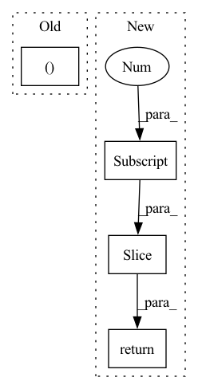

Pattern ID :23019
Before Change
* `x` is the Tensor at the head of a key or a query with shape `[seq_len, batch_size, n_heads, d]`
// Extract the shape
seq_len, batch_size, n_heads, d = x.shape
// $\frac{d}{2}$
d_2 = d // 2After Change
// \end{align}
//
// for $i \in {1, 2, ..., \frac{d}{2}}$
x_rope = (x_rope * self.cos_cached[:x.shape[0] ]) + (neg_half_x * self.sin_cached[:x.shape[0]])
//
return torch.cat((x_rope, x_pass), dim=-1)
class RotaryPEMultiHeadAttention(MultiHeadAttention):In pattern: SUPERPATTERN
Frequency: 3
Non-data size: 4
Instances Fragment ID: 73034842
Project Name: lab-ml/nn
Commit Name: 0ce65adf9e602321109528b05cf99fccb16cd2de
Time: 2022-06-03
Author: vpjayasiri@gmail.com
File Name: labml_nn/transformers/rope/__init__.py
M Class Name: RotaryPositionalEmbeddings
N Class Name: RotaryPositionalEmbeddings
M Method Name: forward(2)
N Method Name: forward(2)
M Parent Class: nn.Module
N Parent Class: nn.Module
M File Name: labml_nn/transformers/rope/__init__.py
N File Name: labml_nn/transformers/rope/__init__.py
M Start Line: 132
M End Line: 163
N Start Line: 171
N End Line: 193
Before Change
else:
seq_mask = None
return att_feats, seq, att_masks, seq_mask
def _forward(self, fc_feats, att_feats, seq, att_masks=None, labels=None):
att_feats, seq, att_masks, seq_mask = self._prepare_feature_forward(att_feats, att_masks, seq, labels)
out = self.model(att_feats, seq, att_masks, seq_mask, memory_matrix=self.memory_matrix, labels = labels)After Change
cur_query_matrix = torch.stack(cur_query_matrix, 0)
//print("111",query_matrix[i, :cur_query_matrix.shape[0], :].shape, cur_query_matrix.shape)
query_matrix[i, :cur_query_matrix.shape[0], :] = cur_query_matrix
cmn_masks[i, :, :cur_query_matrix.shape[0] ] = 1
responses = self.cmn(att_feats, query_matrix, query_matrix, cmn_masks)
//embeddings = embeddings + responses
att_feats = att_feats + responses
"""
dummy_memory_matrix = torch.stack([self.memory_matrix[labels[i]==1,:] for i in range(att_feats.size(0))])
//dummy_memory_matrix = torch.stack([torch.cat([self.memory_matrix, self.global_memory], 0) for index in idxs])
responses = self.cmn(att_feats, dummy_memory_matrix, dummy_memory_matrix)
att_feats = att_feats + responses
"""
// Memory querying and responding for visual features
att_masks = att_masks.unsqueeze(-2)
if seq is not None:
seq = seq[:, :-1]
seq_mask = (seq.data > 0)
seq_mask[:, 0] += True
seq_mask = seq_mask.unsqueeze(-2)
seq_mask = seq_mask & subsequent_mask(seq.size(-1)).to(seq_mask)
else:
seq_mask = None
return att_feats, seq, att_masks, seq_mask, query_matrix, cmn_masks[:,0,:]
def _forward(self, fc_feats, att_feats, seq, att_masks=None, labels=None):
att_feats, seq, att_masks, seq_mask, query_matrix, cmn_masks = \ Fragment ID: 73034843
Project Name: markin-wang/xpronet
Commit Name: f1eadeb44fcd3ca935352b9cc7d30eab0fa8c753
Time: 2021-11-21
Author: cserwj@gmail.com
File Name: modules/base_cmn.py
M Class Name: BaseCMN
N Class Name: BaseCMN
M Method Name: _prepare_feature_forward(5)
N Method Name: _prepare_feature_forward(5)
M Parent Class: AttModel
N Parent Class: AttModel
M File Name: modules/base_cmn.py
N File Name: modules/base_cmn.py
M Start Line: 402
M End Line: 451
N Start Line: 391
N End Line: 444
Before Change
class VoiceLibrosa(AudioData):
def transform(self, aud_ft):
_, _, length = aud_ft.shape
aud_padding = np.zeros((1, 1, 245760))
aud_padding[..., :length] = aud_ft
aud_trans = aud_padding.reshape(256, 320, 3).transpose(2, 0, 1)After Change
wav_tmp = aud_ft[..., n: n + 50176]
if wav_tmp.shape[-1] < 50176:
wav_fill = np.zeros((1, 1, 50176))
wav_fill[..., :wav_tmp.shape[-1] ] = wav_tmp
wav_tmp = wav_fill
return torch.as_tensor(wav_tmp, dtype=torch.float32)
class _VoiceLibrosa(AudioData): Fragment ID: 73034845
Project Name: liaorongfan/deeppersonality
Commit Name: 0fd86d272d808e4c0c3f6da13ea3d70a5f595585
Time: 2021-12-03
Author: 15670381505@163.com
File Name: dpcv/data/datasets/audio_data.py
M Class Name: VoiceLibrosa
N Class Name: VoiceLibrosa
M Method Name: transform(2)
N Method Name: transform(2)
M Parent Class: AudioData
N Parent Class: AudioData
M File Name: dpcv/data/datasets/audio_data.py
N File Name: dpcv/data/datasets/audio_data.py
M Start Line: 58
M End Line: 63
N Start Line: 88
N End Line: 97